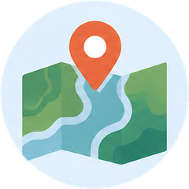

Our Services
Tapestry provides services across four core program areas: Strategy; Information Management; Geospatial Analysis & Mapping; and Content, Writing, and Design. These programs are interwoven, each emphasizing the importance of participatory community engagement, the strengthening of Indigenous governance through the development of robust information management systems and decision-making frameworks, as well as the use of technology to enable territorial and community planning and capacity building.
Strategy
Tapestry offers strategic support to First Nations across many areas including project management, protocol agreements, policy development, marine and land use planning, climate adaptation, resource management, treaty negotiation, referral management, economic development and financial planning.
Information Management
Tapestry affirms the importance of effective information management in upholding Indigenous governance. As Data Custodians we offer services through every stage of the information life cycle rooted in Indigenous data sovereignty and aligned with best practices, tailoring information management systems to fit a community’s specific needs, safeguarding data for the future and providing advisory support.

Geospatial Analysis and Mapping
Tapestry delivers GIS and mapping services that combine technical analysis with visual storytelling to develop maps and GIS products that support community planning and decision-making. From territorial and watershed planning to detailed site-level mapping utilizing a combination of data sources including LiDAR, field-collected data, and publicly available datasets. Products include territorial bioregional atlases, cultural maps, custom mapping products to support technical staff and professionals, and the development of GIS-based systems for asset management and other specialized initiatives.
Content, Writing, and Design
This program focuses on how knowledge is communicated, weaving Indigenous values into Bioregional Atlas narratives, funding proposals, report writing, and community planning.